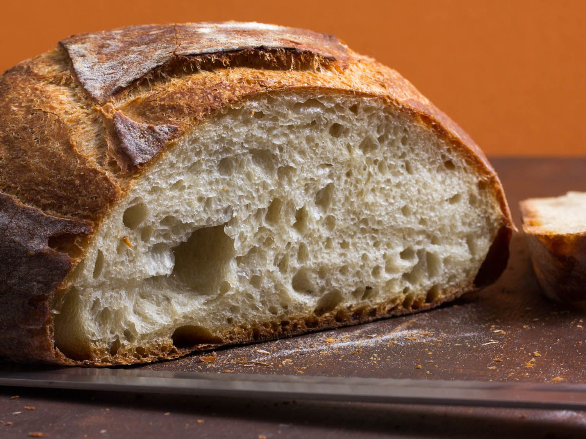

White Bread

Description:
This is another recipe I enjoy making for my wife.
I like to think it makes her life easier.
Ingredients:
- 500g White Flour
- 300g Tepid Water
- 11g Kosher Salt
- 5g Instant Yeast
Directions:
- Allow yeast to bloom for 10 minutes in the tepid water before adding remaining ingredients.
- Allow your stand mixer to beat up the dough for 10 minutes before allowing two 1 hour rounds of rising (broken up by deflating and shaping).
- Bake at 375F until the internal temperature hits 195F (approximately 30-40 minutes.)
- Wait and hour for the bread to cool and rest before slicing!